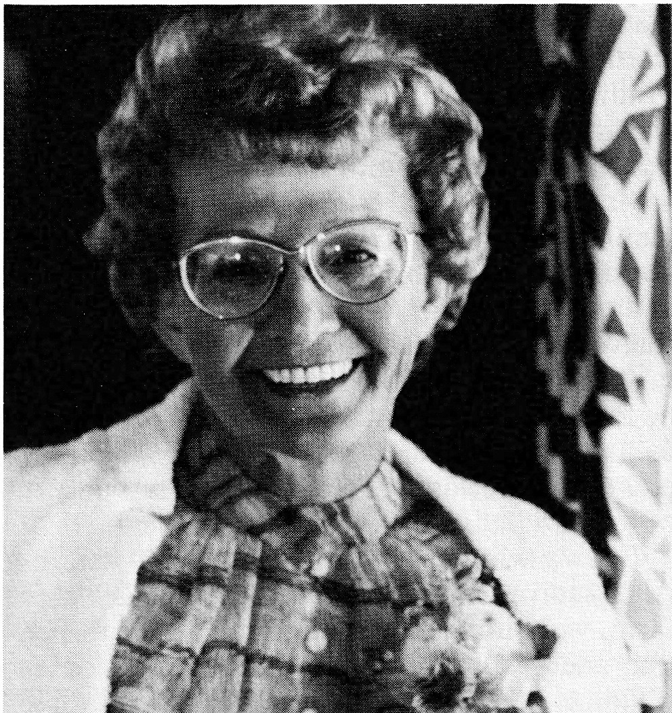
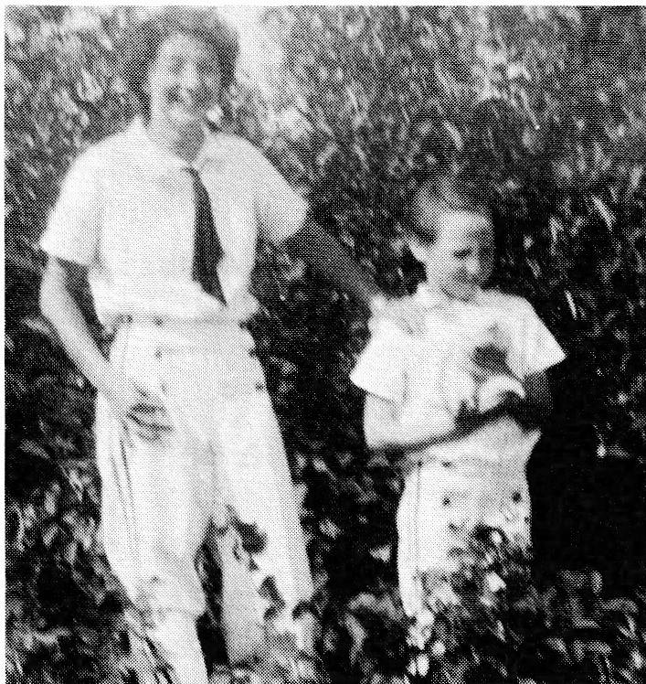
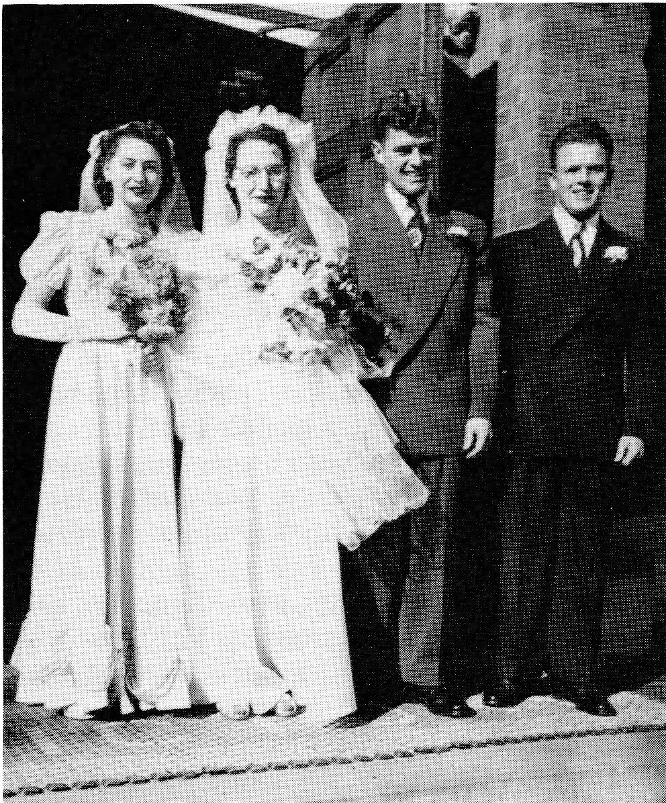
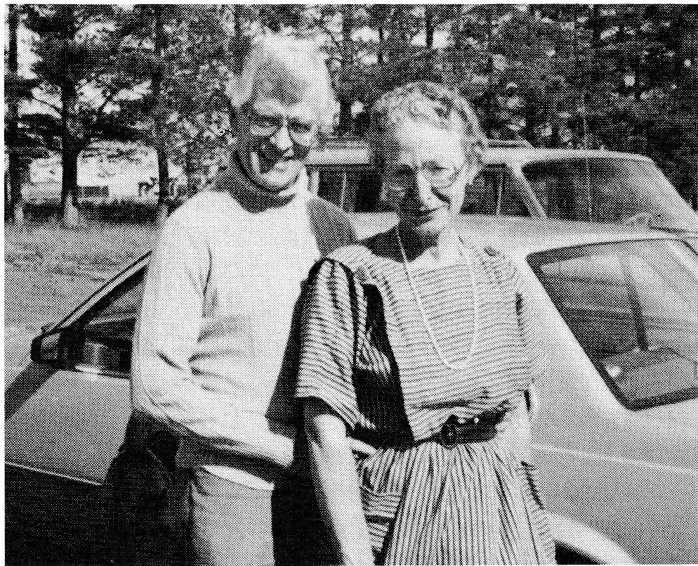
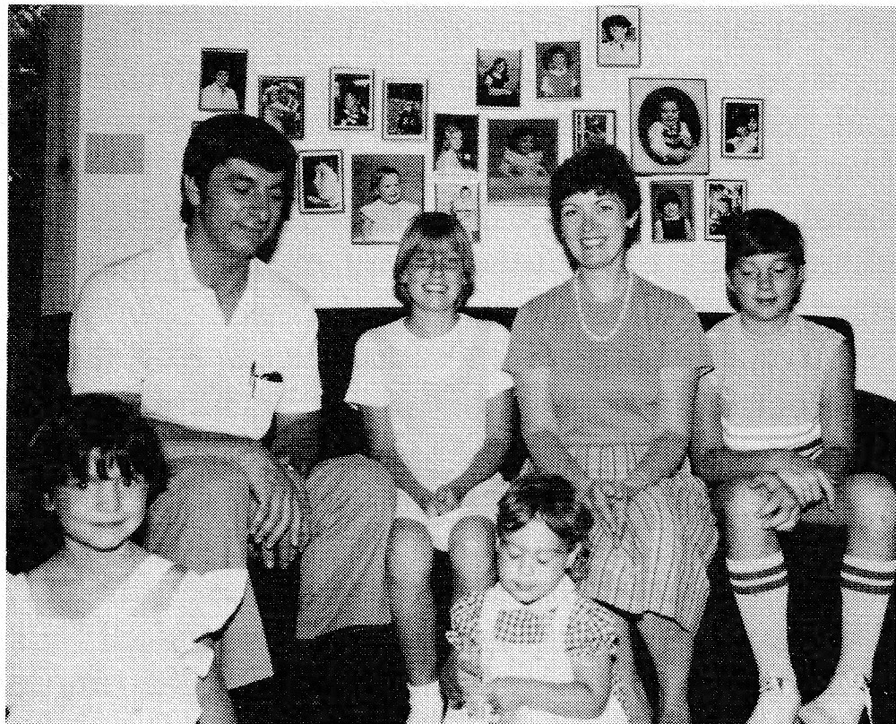
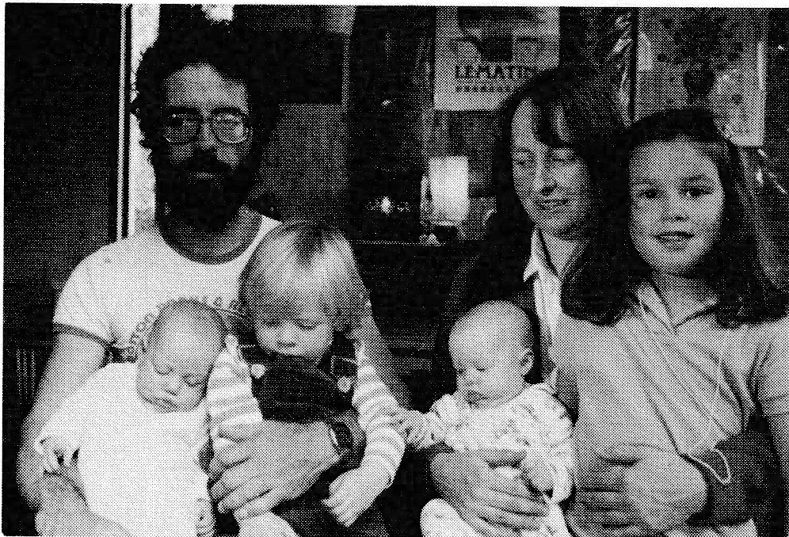
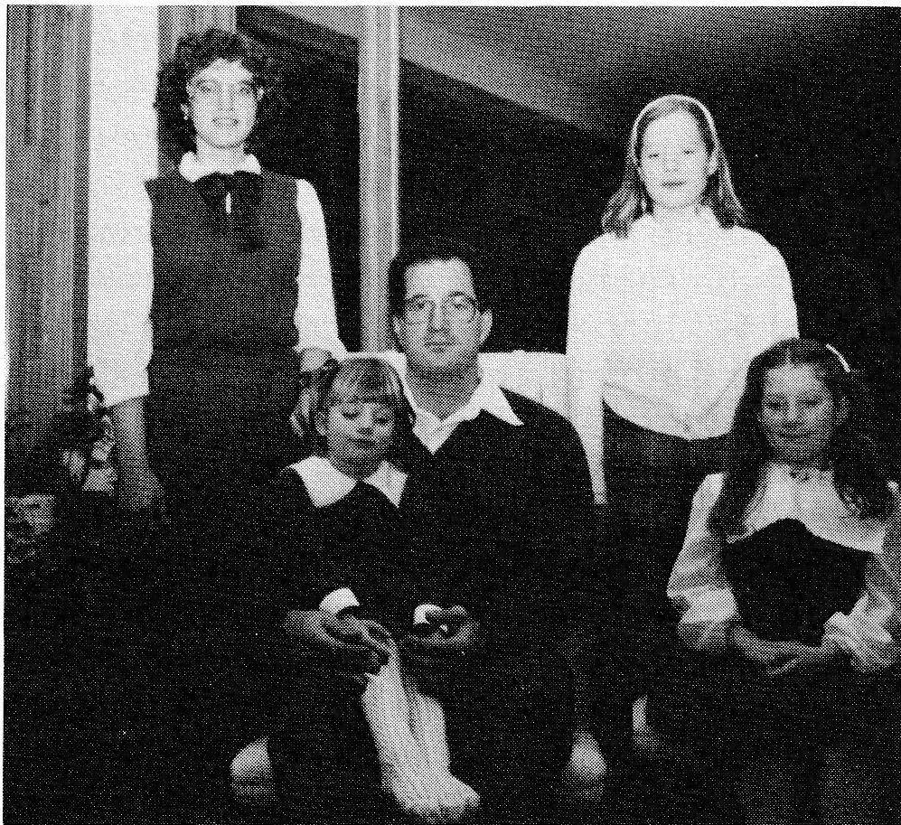
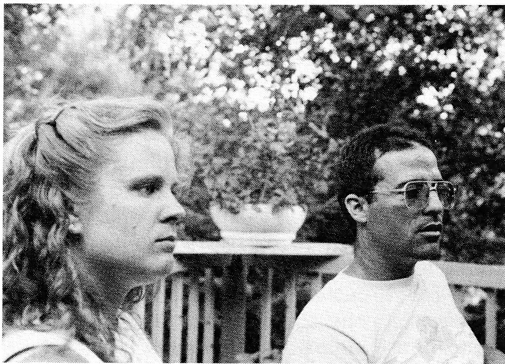
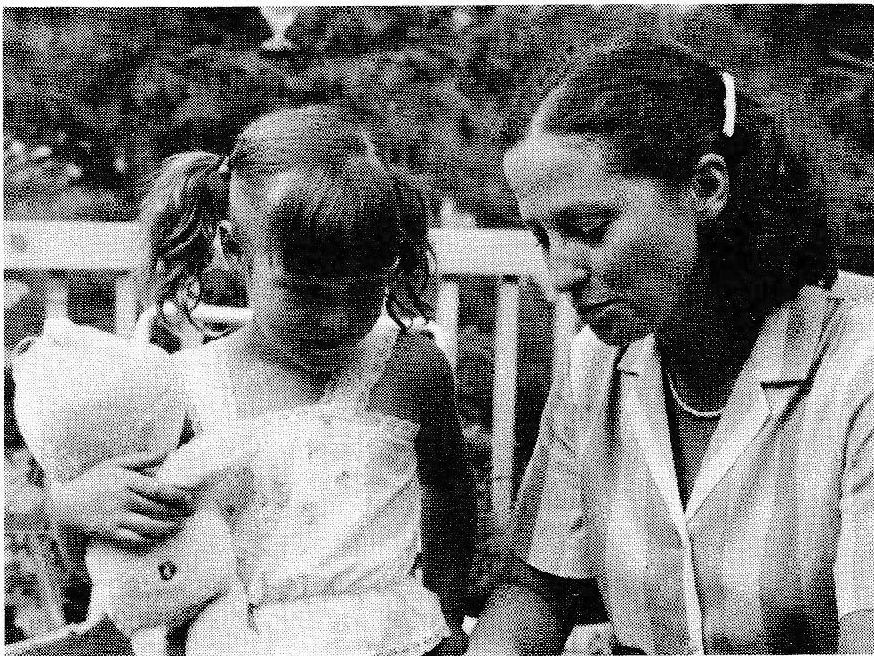
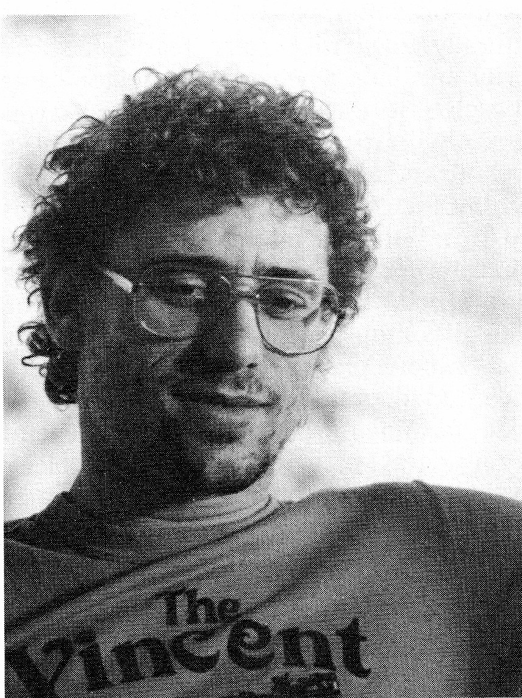

In the coming months, I plan to quit my job and take an early retirement. For the past few years I have been working two eight-hour shifts; as well, my health has not been good since I had back surgery for a ruptured disk in '75.
Recently, I purchased a van and I hope to travel. It would be nice to see Canada in short trips and to spend the winters in the south - Florida in particular.
[Ed.'s Note: Therese is presently living in Vernon, B.C.]

MAE (STRASSER) DALY
My parents, Louis and Rachel, were married August 13, 1927. She wore a green gown which, she used to tell me, was understood at that time that if you wore green, you were ashamed to be seen. You see, Mom was considered an outcast in Delmas, Saskatchewan, because she didn't wear the widow's weeds and remarried much too soon after her first husband, Joe Lessard, had died. He died May 1, 1924.
I was born May 15, 1928, nine months and two days after my parents' marriage. I was born in Veillardville in our log house. It burned down five years later. It was on the site of Gene and Edithe Lessard's present farm home.
I was born with a veil over my face (which meant being born with the placenta over your face). There was an old wives' tale that a baby born with this meant "there was something special about the child." My mother always said one reason she married my father was to have me! When my father found out my mother was pregnant, he didn't like the idea of being a father and couldn't accept the responsibility. He also thought the shock of her being pregnant from the beginning of their marriage would be very difficult for the French - Canadian relatives to accept. He gave her money and sent her to Tisdale to see a doctor about terminating the pregnancy. Well, she went to Tisdale and went on a shopping spree, having a good time instead - obviously that's why I'm still here.
My father left when I was about two years of age. I remember a Mr. Zulov. I've seen a picture of him holding me as a baby and somehow he figured in my very early years. He lived with us, most likely as our hired man. At that time my Uncle Julius also lived with us and his wife, Hettie, too. Uncle Julius was Dad's younger brother. He was a very fine musician and well trained. He played the accordian and also built pipe organs.
I was told about an accident I had when I was very young. When I was nine months old, my older sister Clara bathed me, then sat me on the oven door. It was hot as my mother had opened it only minutes before. She was going to bake bread and was ready to put the loaves in but because the oven was too hot, she opened the door to cool it off a bit. There I sat screaming - my sister was only eight years older than I. My mother grabbed me and the skin from my bottom was left on the oven door. Clara looked after me lots and was like a mother to me. She's always been very special to me.

One of my earliest bedtime memories was the sound of "Grandpa" Alain and my father tapping checkers as they played into the night.
Then the "once only" time they both swore they killed a moose in our backyard, on the farm where Gene and Edithe still live. They both were so sure each had killed it that they dug until they found both bullets - in the same hole! That was the topic of many conversations for quite some time.
Alma and Henry Alain, whom I called Grandma and Grandpa, were my godparents and every May 15, I was summoned to Grandma's bedside to receive my annual handkerchief. She never forgot!
As my father had left home when I was quite young, Grandpa Alain took his place in my heart. He was always very special to me and I loved to hear him sing as he came up behind me, "Elle est frisée comme un mouton." The last time I heard this was in Saskatoon when I was about seventeen years old.
I remember we lived in Hudson Bay one winter and that spring we moved to the North Place. I'll never forget it - there was a high ridge on which we planned to build and a creek on the lower land. We were living in some granaries down below the creek. One of those days in 1934, May 1st, Mom heard all these happy screams and laughter and she couldn't understand what was going on. The creek had overflowed onto the meadow and, when she looked, she saw me flapping around in the water in my underpants. It was such a nice warm spring day! I'll never forget this. And that was the spring I celebrated my sixth birthday.
Also at that time we prepared to build a two-storey house on the high ridge about one-half mile east of the granaries we were living in. A Belgian carpenter worked for us building the new house which we lived in until 1938 when we moved down East.
Mother had a great interest in school, obviously, with having six children. When I was a preschooler, a teacher named Nellie Barteluk boarded with us. This was quite natural for Mom for when she was a child, her parents had also boarded teachers in their home in the United States.
One night during the time we boarded the teacher, Bertha Alain came to spend the night with Clara and, when they began to take off their clothes for bed, my mother noticed lice on them. Their slips were full of these little crawling crea-
tures, so she began to look closely at the rest of their clothes: they, too, were covered. She then combed their hair with special combs and kerosene. The girls had picked up the lice at school.
Louis, my father, helped to build White Poplar School #4269 where I started grade one. I went with Therese and Joe, the only two going from our family by the time I started. We walked, as the school was only a half mile from home. I can't remember my first teacher's name but I do recall one teacher, Mildred Beaudoin, from Leask who was a very nice lady. I also had a man who was said to be a teacher but later it was learned that he was not. Then there was Mr. Phillippe Le Scelleur who was marvelous and was a real teacher. He was the one I remember the best. He taught me until we left in 1938.
In the early part of '37 Clara and Louis planned their marriage. Preparations for the wedding seemed to take weeks. At the time we had a hired man, Anton Buey. He built book shelves which divided the living room. The shelving unit had glass doors and fancy posts. When he finished building it, Anton stained it. The rest of us worked hard at getting the house ready - painting and cleaning. We also made lots and lots of jellied salads for the wedding supper.
Now, while everyone was at the church, Anton stayed home. When we arrived back at the farm, we found Anton had drunk all the turpentine and picked off a lot of the beads on the wedding cake. The cake was a beautiful three-layered square with a little fence around each layer. Where each fence came together, there were silver beads and these were the beads which Anton ate.
We left Veillardville in April 1938. I was going to be ten in May. We went down to Wynyard and visited a couple of guys who had worked for us for two winters earlier. They were brothers and they lived near Wynyard. We also had a hired girl working for us. Eventually, she took a hair dressing course and we met her again, later, in Tillsonburg. In those days the Government would give those people $5 a month to work as domestic hired help. If they stayed until April or May the people keeping them would receive $5 a month. It was a way of putting young people to work and the Government would subsidize them. My mother took the $5 she received and gave it to the girl. That was how Marguerite, our housekeeper, paid for her hair dressing course. She had come from near Leask.
On our way down East, in the spring of 1938, we took an extended trip through Minnesota to meet all the relatives. That was the first time I'd ever seen a nun. We met Aunt Annie Lessard, an aunt of Clara's, Gene's and the rest.
Finally, we arrived in Tillsonburg. It was here that my sister, Therese, and I went to school in the basement of St. Mary's Church. The following year, Therese went to the Tillsonburg High School which was a public high school. I continued at the Separate School. I was promoted and a year later I was in grade nine and Therese was in grade ten. By then my brothers, Joe and Martin, had already quit school and were working. Mom was working in a tobacco factory in Tillsonburg; Therese and I were babysitting.
We began our music lessons when we lived with Miss Thompson. She was crippled with some disease - I think it was Polio. She had asked us to come, stay overnight, make her breakfast in the morning, and bring it up on a tray. For this we received free piano lessons. Somehow, through the help of our parish priest, Father Joe O'Neil, we got a piano. We were able to practise and that is how our music lessons started.
By this time Gene, our older brother, had already left to go back out West. On the way, he hopped a freight train and broke his leg somewhere in northern Ontario. He went back to his old haunts in Veillardville - to be close to Edithe, I guess.
The year I began grade ten, Therese quit school and moved to Hamilton. I was in grade ten until Christmas; then I moved to Hamilton where my mother had rented a place. By this time Joe, Martin and Therese were all working in the city. Joe said to my mother, "I would like Mae to take singing lessons," so he gave her $20 and this paid for my first ten lessons at $2 a lesson, and that is how I began to study singing. Joe thought I had a talent because in Tillsonburg I yodelled and sang cowboy songs with my good friend, Francis Gignac. Also, my Science teacher, who had some interest in music and had travelled around the world, said that she could hear something in my voice, something which told her that I had a talent for singing and she said I should study singing. Later, I studied at the Hamilton Conservatory. I took piano lessons at the convent close by from a nun.
Sometime along the next year or so my brother, Martin, married Floris Tarvis.
I went to Cathedral High in Hamilton for the rest of grade ten and grade eleven. At the end of my grade eleven, my mother was disillusioned with Hamilton so she moved to Toronto. By this time our country was at war and Therese had joined up. Martin and Joe had either joined up or been called. They ended up in the Navy, Therese in the Air Force. My mother rented a two-room apartment right near the centre of Toronto, half a block off Bloor and Yonge Streets. I rode my bicycle all along Highway #2 beside the lake to get from Hamilton to Toronto. I started grade twelve at St. Joseph's High School. I was there one year, first as a day scholar, then I boarded at the convent until the end of June. When school finished, I went out west to Hudson Bay.
My mother moved out West because her brother, Albert, was not well. He was running a shoe store and a shoe repair business in Hudson Bay, Saskatchewan. He had asked her to come to help look after the store so she went out at Christmas time. His son, Freddy, was a baby at the time.
I was sixteen the summer I helped in my uncle's store in Hudson Bay. Naturally, I wanted to look nice but my hair was a mess. It was all frizzy and curly and looked like Uncle Fred's hair had looked when he came back from the lumber camps (Uncle Fred was Mother's brother). My hair needed to be styled so my mother took me to the hair dresser. How well I remember that day my hair was cut and shaped for it was the day of the elections in 1944 when the C.C.F. got into power in Saskatchewan.
Somehow during the war Therese came home on leave and we ended up spending the latter part of the summer at our cousin's near Duck Lake at Domremy, at Uncle Vida's. We spent a lot of time out in the fields with Raymond and Emile Bernier.
That fall, my mother signed me up as a boarder at Sion in Saskatoon to finish my high school. Quite a bit of the work that year was repetitious for me but I did take some new work - grade eleven and twelve German and I started grade twelve Geometry. I remained a boarder till Easter when I discovered that my mother had moved to Saskatoon and was living with her sister and husband, Lucy and Fred Lessard. So I left as a boarder at Sion and completed the year as a day scholar. From there I went to Teacher's College, known then as Normal School. In the summer of '44 I learned I had won a silver medal in grade ten for singing. I had received the highest mark in the province, something I had not expected! I finished summer school and signed a contract to teach at Duck Lake. But my mother thought I was a little too young at seventeen to be going off on my own to teach so she made me break my contract and enrolled me at the University of Saskatchewan. That's how I ended up at university just when the war ended in 1945. It was there that I met Bernard, my future husband. Instead of continuing with my third year, I went to North Battleford and taught grade two at the Convent. The following year I moved back to Saskatoon, took a summer course in Drama, and returned to university that fall.
During the Thanksgiving weekend, on October 9, 1948, I became the wife of Bernard Daly. My mother, having totally disowned me, moved out and went to Hudson Bay. Shortly after, Clara arrived bringing the wedding cake which she had made. Mom was with her and they were both all excited about the wedding. We had a beautiful wedding.

At first we lived in a wartime house, the same one Mom and I had lived in, only now Bernie and I lived in one side with my mother in the other side. During that winter we moved to a basement apartment close to the university. The following spring we moved back to Avenue J and lived in a very small house. By this time, Bernie was working nights for the Star Phoenix and I was pregnant. In 1949, I got my Bachelor of Arts, my ARCT teaching and I became a mother on August 28 - all in one summer!
The following summer we moved to 25th Street and lived in a two-storey house; the second storey was rented to two men. The house belonged to Bob Pravda's aunt. When she and her husband returned, we moved upstairs as the two renters had left. In the spring we moved to Avenue F.
That fall Bernie was offered a job to run the North Battleford newspaper. So we moved again but, as places were hard to get in North Battleford, we ended up living with his parents. It was during this time that I lost a baby.
Our next major move took us back to Saskatoon where we bought a house with the help of St. Mary's Credit Union. A nice home, it was located on Avenue P and we even had a garden there.
Over the next few years Mary Anne and Michael were born. Through these years we had four babysitters, three of which became nuns. We were busy, both of us. Bernie was working at the Star Phoenix and I was directing and singing in church choirs at St. Mary's and at the Newman Club on Campus.
One day in 1957 Bishop Klein called on us. He said he had been asked by the former bishop of Saskatoon (Bishop Pocock who was then Archbishop of Winnipeg) to invite Bernie to accept the duties of press person for the Canadian Conference of Catholic Bishops (CCCB). We sold our house to a hockey star, Gerry Couture, who wanted it for his mother, and in the spring of 1958 we moved to Ottawa. Bernie, who had gone ahead to make arrangements for us, had the misfortune of having a ruptured appendix. We ended up spending Easter week at his cousin's home. There we were, with their three children, a husband recuperating from peritonitis and our five small children on a cold, muddy Easter week. Finally our furniture arrived and we moved into a triplex house in the east end of Ottawa. This was only a temporary move; that summer we had a house built.
We had been introduced to Christian Family Movement by Grant and Vivian Maxwell in Saskatoon. Now, in Ottawa, we became active in a local group. Later we replaced the Maxwells on the programme writing committee for C.F.M. We served as chair couple for several years and later were the Canadian representative couple in International C.F.M., which resulted in quite a bit of travel.
From 1969, I became interested in a very spe-cial Music Education philosophy and in 1972 founded the Kodaly Institute of Canada. I was its Executive Director for ten years. Later, I changed my direction and put my energy into a music school in Ottawa.
Over the years Bernie has been involved in a number of jobs – always with the Church. Shortly after our move to Ottawa, the upcoming Vatican Council II was announced. The Cana-dian Bishops asked Bernie if he would cover the council as a newspaper person. So, over the next few years, he travelled to Rome to attend all four sessions, a total of one year in all. I was fortunate to go in the third year as a pilgrim for three weeks. I met, among other people, the first woman observer at the Vatican Council, Mlle. Vinet.
Once the council was over, Bernie returned home to Ottawa and to studies for his Master's degree in Sociology. He became the director of the newly established Family Life Bureau. Then he was again approached by the Canadian Bishops, this time to ask if he would become a member of a six-man advisory team. Bernie accepted. Three of the team were English and three were French while their educational back-grounds were of varied disciplines (i.e. sociology, theology, among others). The team was respon-sible for preparing statements and, at times, crit-icizing the Government's position on issues like birth control, abortion and immigration policies.
Since then, Bernie took an active part in Pope John Paul II's visit to Canada as the Assistant Co-ordinator, a task that took a year and a half. Here we shall let Bernie share with you:
"A few words here cannot add anything to the September days of Pope John Paul II's visit which so gripped the lives of Canadians. I had been scheduled to spend the visit at a co-ordina-tion centre in Ottawa but, two days into the tour, was called to duties in the party travelling with the Pope. The work to be done was at the back of the plane, on the bus in the motorcade, and behind the papal altars from St. John's to Ottawa – never very close to the papal stateroom or the various red carpets but still part of that great adventure. A lot of the work had to do with seeing to it that translations of the Pope's talks got through on time to media centres, the host broadcaster, the simultaneous translators, the host diocese, and the special service for people with hearing impairments. This afforded a priv-
ileged opportunity to work with and get to know a number of the Pope's personal staff, who put in extremely long, hard hours. And there was a never-to-be-repeated close-up view of some two million Canadians in festive excitement, in rain, fog, wind, and under a brilliant sun. One lasting memory is of how gently they touched, Pope and people, as they reached out to each other. Whereas in the planning stage there had been much pushing, shoving, grasping and striving for more time and space, during the actual visit this side of us seemed to yield to generosity and, above all, gentleness. There was crowd control, but also the crowds themselves were controlled, considerate, convivial; and they and Pope John Paul II exchanged thousands of tender touches."
"Of course, there was no chance to get to know him personally, but one couldn't work and live in that setting without gaining some impres-sions of him as a person. First among these is of his controlled, disciplined sense of presence. When he knelt before the Blessed Sacrament, so undistracted was his prayerfulness that crowded cathedrals echoing with handclapping and bus-tling fell absolutely silent, as if a power cord had been unplugged. A sick or elderly person felt he saw only them when they chatted. It must only be by being so attentive to what he is doing at the time, be it his work, prayer, rest or meals, that he is able to maintain such a pace."
"As part of all the arrangements, the Cana-dian Bishops chartered the plane to carry the Pope, his party and some international jour-nalists back to Rome. There was room for a few others to have the honour of going along, among them the two of us."

Following the Papal visit Bernie took on new responsibilities, that of CCCB assistant general secretary (English sector). This is quite an honour as it is the first time a lay person has been given the opportunity to serve in this capacity. As well, Bernie presently serves on the Board of Directors of St. Thomas More College in Saskatoon which requires that he attend a yearly board meeting. He still has six months sabbatical coming and, in the not-so-distant future, the possibility of retirement.
We presently reside at Wilson's Corners, Quebec, and have recently renovated our little home more than doubling the original floor space. We travelled to Grenada, Saskatoon and other points West in 1985. We each enjoy good health amid the "ordinary and extraordinary" events with family, friends, and colleagues whether it be at home, work or simply while relaxing.
Our family has grown. They are:
Tom and Robin who live in Lunenburg, Nova Scotia with their children: Jesse, Brennan and twins, Elynyd and Kieran, born July 2, 1986.

Pat with her husband, Giorgio Grappolini, and children: John, Michelle, Luisa and Julia live in Sherwood Park, Alberta, where Giorgio is employed in the oil industry.
Mary Anne and Joe Burke live in Ottawa, Ontario, with their three children: Thomasina, Hannah and Moira.
Michael married Lisa Slinkard and they are living in California. He has a son, Patrick.
Teresa is a member of Canada's Armed Forces and lives in Trenton, Ontario, with daughter, Tiana.
Timothy is employed out West.





In 1974, Rachel Strasser received a plaque from the Saskatchewan Wheat Pool on behalf of her first husband, Joe Lessard, who was an original member in 1924. The plaque was given to members. 1924 - 1974 (50 years).
RECIPES
Alma Alain often made "Les Tourtieres." The following recipe was submitted by her daughter, Edithe Lessard.
Les Tourtieres (Pork Meat Pies)
Take a raw pork shoulder and trim off excess fat. Slice into thin slices about 1/4 inch thick. Then cube these slices.
To the above mixture, add the following to taste:
onions
salt and pepper
cloves or all-spice
Barely cover with cold water and bring to a boil. Simmer 45 minutes or until mixture thickens. Set aside to cool while preparing pastry as follows:
Pastry
| 2 cups flour (remove | 5 tbsp. ice water |
| 1 1/2 tbsp. of the flour) | 1/4 tsp. salt |
| 5 tbsp. lard | Add salt to flour. |
| 5 tbsp. butter |
Cut lard and butter into dry ingredients. Add water and mix as for pastry.
Prepare bottom crust, then pour in the meat filling. Place the top crust over and bake at 350° F. till pastry is brown.
* * * *
Les Tourtieres were served in French homes during the Christmas season.
In the Alain home, Alma served pork pies both at Christmas and at New Year's. She served them hot -- alone or with gravy.
* * * *
Cream of Tomato Soup
| 2 cups tomatoes | 3 tbsp. butter |
| 1 tsp. sugar | 3 cups milk |
| 1/4 tsp. baking soda | seasoning |
Cook tomatoes and sugar for a few minutes. Mash tomatoes and add soda to neutralize acid in tomatoes. Add tomatoes slowly to milk, butter and seasoning. Have tomatoes and milk at same temperature or soup may curdle. Serve immediately.
Rachel Strasser was known for her tomato soup.